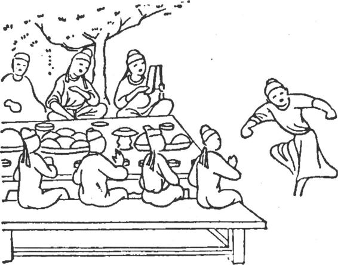
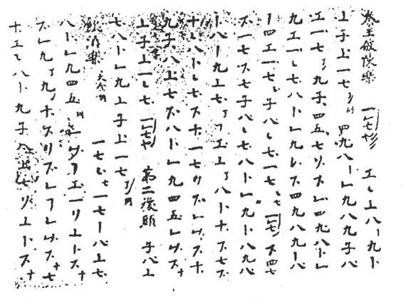

经过长期的社会动荡，在民族融合运动达到一个新阶段、南北文化有了更多的交流、各族人民都有了政治统一的要求下，隋文帝杨坚建立了隋朝，统一南北，继承了北朝和南朝的文化——包括音乐文化。
隋朝设立的音乐机构，有“太乐署”（雅乐）、“清商署”（俗乐）和“鼓吹署”（礼仪音乐）。开皇二年（582），隋文帝下令整理音乐，引起了一场关于乐律的争论。这时由于国内民族之间以及中外音乐文化的交流，乐律的差别问题引起音乐家的注意。郑译上书阐述龟兹乐律，把中原乐律和西域乐律结合起来。这种龟兹乐律大概是西域广泛流行的属于西域乐系的一种古老乐律。因用琵琶定律比较方便，所以传入中原之后，就被一些音乐家采用。它对隋唐燕乐（宴乐）的乐律有一定的影响。
隋代初年，宫廷燕乐置七部乐：（1）国伎，即西凉伎，出于凉州（今甘肃武威）一带；（2）清商伎，指中原和江南地区的传统音乐和民间音乐；（3）高丽伎；（4）天竺伎（天竺指印度）；（5）安国伎（安国即今中亚布哈拉）；（6）龟兹伎；（7）文康伎，传说原是纪念晋朝太尉庾亮（谥文康）的乐舞。此外，又杂有疏勒（今新疆喀什）、扶南、康国、百济、突厥、新罗（在今朝鲜）、倭国（在今日本）等伎。隋炀帝时又加以调整，定为九部：清乐（即清商伎）、西凉、龟兹、天竺、康国、疏勒、安国、高丽、礼毕（即文康伎）。这些项目反映出，当时朝廷已经广泛地搜集到国内外的多种乐舞。但这些只是朝廷举行宴会时乐舞表演的节目次序单，目的在炫耀皇帝的“威德”，不能反映当时社会上新音乐的内容。
唐朝前期一百多年间，社会安定，经济有很大的发展。当时人民继承发扬南朝和北朝的文化传统，而且各民族、各地区文化交流的范围更为扩大，对国外的文化交流也更为广泛，因此，民间的音乐活动已成为社会风气，新的音乐不断地、大量地涌现出来，并得到普遍传播。
唐朝初年，宫廷燕乐沿用隋九部乐，但增“燕乐”（宴乐），删“礼毕”。至唐太宗时调整为十部：（1）燕乐；（2）清商乐；（3）西凉乐；（4）天竺乐；（5）高丽乐；（6）龟兹乐；（7）安国乐；（8）疏勒乐；（9）康国乐；（10）高昌乐，高昌即今新疆吐鲁番。这十部乐中，第一部是狭义的燕乐，包括《景云乐》、《庆善乐》、《破阵乐》（秦王破阵乐）和《承天乐》四个项目，都是为统治阶级歌功颂德的。第二部清商乐是中原音乐。其他八部各有民族特点、地区特点或外来乐舞特点。
至唐高宗时，十部乐即向“坐部伎”和“立部伎”转化。坐部伎在堂上坐着演奏，立部伎在堂下站着演奏。这两部伎的项目，至唐玄宗时就确定下来：坐部伎有《燕乐》、《长寿乐》、《天授乐》、《鸟歌万岁乐》、《龙池乐》和《小破阵乐》；立部伎有《安乐》、《太平乐》、《破阵乐》、《庆善乐》、《大定乐》、《上元乐》、《圣寿乐》和《光圣乐》。都变成了以传统或民间乐舞为基础、吸收十部乐及其他乐舞因素，或者就外来乐舞加以改编所创造的综合性的大型乐舞。（彩图14）十部乐向坐、立部伎的转化，标志着唐代宫廷乐舞在艺术上的一次突破，当然也可能从此趋向僵化了。
唐朝的音乐机构，原来有太乐署、鼓吹署和教坊，都由太常寺管辖。教坊在宫廷中，规模很小，至玄宗开元二年（714）大加扩充，除宫廷中设内教坊以外，在西京长安（今西安）和东京洛阳，各设外教坊两所，都不属于太常寺，而另由宫廷派内官（宦官）为“教坊使”，进行管理。宫廷中还有“梨园”等，也是培养乐工的处所。《新唐书·礼乐志》说：“玄宗既知音律，又酷爱法曲，选坐部伎子弟三百，教于梨园，声有误者，帝必觉而正之，号‘皇帝梨园弟子’。”又说：“宫女数百，亦为梨园弟子，居宜春北院。”这些音乐机构，主要传习俗乐，是搜集民间乐舞、培养乐工的地方，也是提高乐舞艺术、传播乐舞的地方。此外，贵族豪门以及各州郡也都有乐人伶工。在唐玄宗提倡之下，乐舞盛行，风靡一时。
唐代音乐至唐玄宗时达到鼎盛时期。宋沈括《梦溪笔谈》说：天宝十三载（754），“以先王之乐为雅乐，前世新声为清乐，合胡部者为宴乐（燕乐）”（卷五）。所谓雅乐用于朝廷礼仪，伪托为古代圣王遗留下来的。胡部主要指西域音乐。就唐代音乐的发展趋势和整体说，它是继承了传统的清商乐，以中原民间音乐为基础，并吸收国内各民族的音乐成果以及外来音乐因素而形成的新音乐。但并不是任何具体乐曲都具备这种综合性质。实际上，广大地区的民间音乐，都依照各自的传统和规律在发展着，并未受到外来影响。
天宝十四载（755），安史之乱爆发。“渔阳鞞鼓动地来，惊破《霓裳羽衣曲》。”［24］“梨园弟子散如烟。”［25］唐玄宗仓皇出走，教坊乐人多流散各地，教坊乐舞却因此更广传于民间。至德二年（757），唐肃宗收复两京，教坊未能恢复开元之盛。唐代宗大历十四年（779），下诏罢除梨园伶使及冗员三百余人，留者隶属于太常寺。至唐宪宗元和十四年（819），复置内教坊于延政里。［26］唐宣宗初年，太常乐工仍有五千余人，俗乐一千五百余人。所以终唐之世，一直保持着开元乐舞的流风余韵。
当时民间的集体音乐活动往往和民间节日及寺院的宗教活动结合起来。唐代佛教已发展到鼎盛时期，寺院林立，有些大寺院是宗教活动、娱乐活动以及其他文化活动的处所，也是商业活动的处所。甘肃敦煌莫高窟保存的大量乐舞壁画和文书，为研究唐代音乐提供了丰富的珍贵资料。壁画的时代，上起北魏，下至元代，而以唐代的居多。其中一百四十多幅经变画有伎乐，一般是一组，少数为两组，也有三组的。每组有一个或两个跳舞的舞伎。伴奏的乐伎，少的两人，多的达34人。壁画中还有世俗乐舞33幅。（图11—11）经变画并非写实作品，但反映了社会现实的影子。根据这些壁画可以大致辨清文献记载的乐器形状和演奏方式。壁画所根据的大概也有寺院艺僧演奏的状况。

图11-11 敦煌莫高窟360窟宴饮乐舞图（晚唐）［27］
唐高宗时，“敕九部乐及京城诸寺幡盖众伎，送玄奘及所翻经像、诸高僧入住慈恩寺”［28］。这里所说的“众伎”可能包括各寺的艺僧。艺僧中有不少高手。如唐德宗时的段善本（段和尚）就是最突出的一个。古代相传，长安东西两市祈雨，比赛音乐，都用琵琶弹《六幺》大曲，西市的段善本赛过东市以擅长琵琶著名的康昆仑，［29］传为艺坛佳话。诗人元稹的《琵琶歌》赞扬段善本的弟子李管儿说：“段师弟子数十人，李家管儿称第一。”“管儿还为弹《六幺》，《六幺》依旧声迢迢。猿鸣雪岫来三峡，鹤唳晴空闻九霄。”管儿弹出的这样悠扬清爽的《六幺》曲，可以使人想象段善本的艺术修养和风格。
长安的大寺院里平时也设“戏场”。唐宣宗大中年间（847—859），“戏场多集于慈恩（寺），小者在青龙（寺），其次在荐福（寺）、永寿（寺）”［30］。戏场里都有些什么活动呢？除乐舞之外，大概还有“俗讲”、歌舞小戏、杂技幻术之类。敦煌发现的文献资料中有乐谱、舞谱、曲子词、变文等，都是寺院保存使用的，也有些作品出于僧人之手，可以反映当时寺院音乐活动的内容。
为什么敦煌石窟中保存下来这么多音乐史料，而曲子词中宣扬佛法的并不太多，大部分是以爱情为主题？这大概就是由于当时寺院的音乐活动已经和社会上的音乐活动结合起来。我们看西安地区历史悠久的“鼓乐”社团，其成员有农民、市民、和尚、道士，互教互学，而有些乐社即以佛寺、道观为主，但所传习的仍然是鼓乐，并非佛曲道曲（当然也可能包括佛曲道曲），这种情况可以触发我们对当年敦煌寺院音乐活动的想象。
唐代的乐曲，就曲式结构说，可以分为两大类：（1）杂曲子，是独立小曲，一般都比较短。（2）大曲，是包括许多乐章的具有固定结构的大型套曲。其中有些小曲是可以独立的或原是独立小曲而被编入大曲的。大曲都和舞蹈结合，结构相当复杂。唐代乐曲很多，唐崔令钦《教坊记》、段安节《乐府杂录》、南卓《羯鼓录》和宋王溥《唐会要》等书中，比较集中地记录下来一部分。《教坊记》所录杂曲子及大曲，多半是开元、天宝年间流行的乐曲，或出于传统音乐，如《乌夜啼》、《广陵散》本为清商曲；或来自各地民间，如《凉州》来自今甘肃武威，《伊州》来自今新疆哈密，《赞普子》出于藏族地区；或出于宫廷音乐家的创作，如《秦王破阵乐》；也有外来乐曲而经改编者。搜集的范围很广。［31］
唐代的歌词有歌诗，有曲词。歌诗指齐言诗，大部分是五言或七言绝句体。这种形式是民歌的基本形式，在配合乐曲时有广泛的适应性；何况律诗讲究语音的升降调协，本身已具有音乐的谐和特点，只要演唱时依照乐曲的旋律，在节奏上加以适当的处理，就能和曲调配合。曲词即曲子词，是严格依照乐曲的节拍所填写的长短句体的歌词，即文学史上所说的“词”。其中除极少数始终保持齐言体的唱词以外，不包括歌诗。填过长短句的乐曲，即称为“词调”，是唐代乐曲的一部分。早期的词调中有许多是教坊曲。教坊曲是当时最流行的乐曲。
从敦煌壁画中的世俗乐舞图，可以想象当时民间的宴饮歌舞活动。唐薛用弱《集异记》记载过这样一个故事：“开元中，诗人王昌龄、高适、王之涣诣旗亭（酒楼）饮。梨园伶官亦招妓聚燕（宴）。三人私约曰：‘我辈擅诗名，未定甲乙（名次），试观诸伶讴诗分优劣’。”他们果然听到，伶人先唱高适的《哭单父梁少府》诗，后唱王之涣《凉州词》。这个故事反映了唱诗的风气。很多词调在填入长短句之前，都用歌诗配合过。如《阳关曲》原来的乐曲名称失考，这个词调是由于最初和王维《送元二使安西》诗配合而得名的：“渭城朝雨浥清尘，客舍青青柳色新。劝君更尽一杯酒，西出阳关无故入。”不知当时如何咏唱。白居易《对酒》诗说：“相逢切莫推辞醉，听唱《阳关》第四声。”自注：“第四声‘劝君更尽一杯酒，西出阳关无故人。’”可见咏唱时曾对文字进行调整。以后流传的《阳关三叠》又有不同的唱法。
长短句曲词最早出于民间，已为敦煌曲子词所证明。经学者考证，敦煌曲子词中有些可能是盛唐的作品，但在写作技巧方面已经达到相当熟练的程度。因此推断这种长短句体裁的产生当在盛唐之前，大约在唐高宗时（7世纪中叶）。至盛唐时期，文人开始填写曲子词，但保留下来的不多。中唐时期，白居易、元稹等填了不少的词。他们和民间的音乐活动接触较多，不可能不受到民间曲词的影响。
词调大部分出于民间乐曲。如《长相思》原名《湘妃怨》，是民间祭祀娥皇、女英时所用的乐曲。古代有个神话，说虞舜巡游云南，使二妃——娥皇、女英留居潇水、湘水一带。舜死了以后，“二妃泪下，染竹成斑。（二妃）死为湘水神，故曰湘妃”。白居易依照《湘妃怨》的节拍填词，此曲因而成为词调，改名《长相思》。白词第二首说：
深画眉，浅画眉，蝉鬓鬅鬙云满衣，阳台行雨回。巫山高，巫山低，暮雨潇潇郎不归，空床独守时。
用《湘妃怨》曲调写巫山神女的传说。白居易《听弹〈湘妃怨〉》诗说：“分明曲里愁云南，似道‘潇潇郎不归’。”自注：“江南新词有云：‘暮雨潇潇郎不归’。”由此可以推断，《长相思》的前身即《湘妃怨》，《湘妃怨》是祭祀湘水女神的琴曲。白居易又有《忆江南》词三首，第二首说：
江南忆，最忆是杭州。山寺月明寻桂子，郡亭枕上看潮头，何日更重游。
自注：“此曲名《谢秋娘》，每首五句。”刘禹锡作词，题为《和乐天（白居易）春词，依〈忆江南〉曲拍为句》。
第一首说：
春去也，多谢洛城人。弱柳从风疑举袂，丛兰浥露似沾巾。独坐亦含颦。
“洛城人”指白居易。白居易自称所填《长相思》词为“江南新词”，正是为了表示不同于齐言体的歌诗。他填写《忆江南》词，特别指出原曲为《谢秋娘》，而刘禹锡与白居易唱和的《忆江南》词，题目即标明“依《忆江南》曲拍为句”，可见这时文人填词还没有形成普遍的风气，还是一种新鲜的创作方式，所以需要作些说明。从此以后，作词的风气在文人中间就发展起来，盛行于晚唐五代，而大盛于两宋。
关于唐代大曲的研究，根据唐代文献可以知道，大曲分为三大段，即“散序”、“中序”和“破”。每一大段包括若干“遍”，遍也是段的意思。早期的大曲歌词都是齐言诗，到宋代才有长短句体的大曲词（散序无拍，不配诗词）。
我国的讲唱文艺源远流长，唐代的变文有了新的发展。在唐代，民间有“转变”，学者或认为即讲唱变文。按“转”或写作“啭”，是唱的意思。寺院利用这种形式宣扬佛法，但为了招引听众，募集布施，于是广泛采用社会题材。这种形式称为俗讲，所用说唱底本称为变文。《乐府杂录·文叙子》条记载：“长庆中（821—824），俗讲僧文叙（溆）善吟经，其声宛畅，感动里人。乐工黄米饭依其念四声‘观世音菩萨’，乃撰此曲（《文溆子》）。”唐赵璘《因话录》说：文溆举行俗讲时，“听者填咽寺舍”。可见他的歌声深受群众赞赏。［32］
但唐代的变文直到敦煌莫高窟藏经洞被发现以后，大家才看到。关于变文的范围，说者多有分歧，现在暂时以说唱故事的文艺作品为限。就这批变文的形式说，可以分为三类：（1）有说有唱，是标准形式，占多数。（2）只唱不说。（3）只说不唱，和音乐无关。也许第二类说的部分不多，第三类唱的部分不多，在写定文本时便省去了，待讲唱时再临时补充。变文的咏唱部分，主要是五言或七言诗。大约佛教变文多采用佛曲，其他变文多采用流行乐曲。
唐代的音乐资料还有敦煌莫高窟17窟发现的乐谱和舞谱。乐谱是“工尺谱”，用“工”、“尺”等笔画简单的字记写唱名，（图11—12）有《倾杯乐》、《西江月》、《心事子》、《伊州》等九曲。这种记谱法不知始于何时，但发展到敦煌乐谱的记写水平，一定经历过相当长的实用过程。敦煌舞谱残卷包括《遐方远》、《南歌子》等六曲，还有《五段子》等三曲各一段，所用谱字有“令”、“送”、“摇”、“据”等，也是企图用最少的谱字记录下每个舞蹈的动作和结构。但无论舞谱或乐谱，记下来的都只是基本结构，在表演或演奏时都还需要乐舞伎临时依照乐舞规律加工，或即兴加以补充调整。

图11-12 唐《秦王破阵乐》曲谱（部分），抄在后唐长兴四年（933）讲经文背面
隋唐时期，由于陆路（主要是丝绸之路）和海路交通的发达，商业贸易的兴旺，国际政治活动的加强，宗教的传播，地理知识的增进，民族迁徙流动的频繁，东方各国各民族开始了更加广泛的接触。各国各民族都有长期积累的文化成就，一经接触，彼此发现各方都有特异之处，足以取长补短，充实各自的社会生活内容，因此，引起了大规模的活跃的文化交流运动，而乐舞艺术又是其中最显著的一种事物。当时中国由于所处的地理位置，以及在经济和文化上所取得的成就，很自然地成为东方文化交流的枢纽地带，唐朝的首都长安成为当时的国际大都市。
隋朝的“七部乐”中有外来乐舞三种，七部之外又有外来乐舞五种。宫廷燕乐中虽然只安排一些著名的外来乐舞，也可以反映南北朝以来中外音乐文化交流的部分成果。
唐代初年的九部乐和十部乐中都有外来乐舞四种。后来十部乐为坐、立部伎所代替，立部伎的《太平乐》就采取了天竺乐舞因素。《太平乐》也称《五方狮子舞》。狮子原出于“天竺、狮子等国”。狮子国即今斯里兰卡。舞蹈表演时，驯狮人“作昆仑象”，即化妆成黑皮肤的人。“百四十人歌《太平乐》，舞忭以从之。”［33］古代泛称东南亚诸岛为昆仑。
唐代有许多著名的艺人和宫廷乐师来自中亚。［34］如“舞胡”安叱奴来自安国；琵琶名手曹善才、曹纲来自曹国，曹国故地在今中亚撒马尔罕的北方；米嘉荣、米和郎来自米国，米国故地在撒马尔罕的西南方。唐代的教坊吸收了一些中亚、印度以及更远地区的乐舞。如《柘枝》源出于石国，石国即今中亚的塔什干；《婆罗门》出于印度；《拂林》出于东罗马帝国或其东方属地，等等。
隋朝宫廷燕乐《天竺乐》中有《天曲》，就是佛曲。当时有些佛曲已经在社会上流行，其中有代表性的被选入燕乐中。到了唐代，佛教音乐在中国有很大发展。有些佛曲经过改编，有些为民间乐曲或传统乐曲所代替，中国僧人也创作佛曲。但总有一部分佛曲或多或少带些印度或西域的音乐因素，有宗教意味。寺院也起了传播西域和印度乐舞的作用。
唐代的其他外来宗教，还有摩尼教、祆教、景教等。摩尼教出于波斯，约6—7世纪传入我国新疆，武则天延载元年（694）传入长安。《隋书·音乐志》所载宫廷燕乐《龟兹乐》中有歌曲《善善》、《摩尼》。或认为应读为《善善摩尼》，即鄯善地方的摩尼教乐曲。［35］但《通志·乐略》所列龟兹乐舞曲名及顺序与《隋书》稍有不同，《善善》和《摩尼》不相连接，显然不是一个乐曲。《摩尼》也未必和摩尼教有关。祆教也称火祆教，出于波斯，约于北魏神龟年间（518—519）传入中原。据记载，河南府祆祠祭神时，“琵琶、鼓笛，酣歌醉舞”［36］。这可能是祆教徒祭神时的普遍状况。祆祠中主持祭祀的僧人称为“穆护”。唐代有《穆护子》、《穆护砂》（砂应作煞）等乐曲，都可能和祆教有关。又《教法佛经》称“祆神”为“摩醯首罗”［37］，而唐天宝十三载（754）太乐署改诸乐名，其中《摩醯首罗》改名《归真》，［38］任半塘认为此曲可能和祆教有关。［39］景教是基督教的聂斯脱利派。唐太宗贞观九年（635），教徒叙利亚人阿罗本等经波斯来长安译经传教。敦煌发现的七八世纪的景教资料中，有一种即近代天主教“弥撒”中所唱的《荣福经》（Gloria in Excelsis），又杂以《谢恩经》（Te Deum Laudamus）。［40］既有歌词，也应有相应的曲调，［41］当然曲调或有变化，或由中国曲调代替。
其他国家，还有“室利佛逝”国于七八世纪之间，曾派遣使臣带领艺人到长安。室利佛逝即今印度尼西亚的苏门答腊。唐代宗大历十二年（777），渤海国的使臣送日本舞女11人到长安。唐德宗贞元十八年（802），骠国（今缅甸）派遣庞大的乐团携带乐器19种32件，到达长安。演奏的乐曲有12首。这些国家的乐舞对唐朝的乐舞都有影响。
唐代的中国人民对外来乐舞的吸收，是有条件、有选择的。他们所采取的方法可以分为三种：
（1）吸收——例如，唐代曾一度盛行由波斯传来的“泼寒胡戏”。在严冬季节，表演者“裸体跳足”，持油囊装水，互相泼洒，载歌载舞，以为戏乐。后来，此戏被禁绝，但所用的舞蹈《浑脱》、乐曲《苏幕遮》却保留下来。“浑脱”大概是波斯语“口袋”（kunda）的音译，“苏幕遮”大概是波斯语“披肩”（samosa）的音译。
（2）融合——例如，用《浑脱》舞和中国传统的剑舞糅合起来，成为《剑器浑脱》。开元年间，舞蹈家公孙大娘擅长此舞，“浏漓顿挫，独出冠时。”杜甫为她和她的弟子的精湛艺术，写下了《观公孙大娘弟子舞〈剑器〉行》著名的诗篇。
（3）改编——例如，天宝十三载，太乐署公布更改一大批乐名舞名，其中“沙陀调”《苏幕遮》改为《宇宙清》，“金风调”《苏幕遮》改为《感皇恩》。乐曲改名不只是为了使曲名中原化，而且也意味着乐曲本身已经按照中原风格的要求经过了改编或再创作。这次改名的乐曲中有外来乐曲，也有我国西部民族地区的乐曲。唐代乐人采取这些方式对唐代音乐加以补充。
隋唐时期，中国乐舞也不断地向四周各国传播。例如，当时最流行的乐器之一“筚篥”即出于龟兹。语言学家岑麒祥说，古龟兹语称筚篥为“巴勒喀”（vallaki），“喀”是词尾，是微小的意思。按汉语筚篥当是龟兹语的音译。现在维吾尔语称筚篥为“皮皮”，有的地方也称“巴勒满”，其形状及名称都和vallaki有继承关系。筚篥流传到各邻国，或称为筚篥，如朝鲜、日本；或称为筚，如越南、泰国。流传到伊朗后，波斯语称为“巴勒般”，当是巴勒满的音变。
唐朝初年，有歌颂“秦王”李世民（即后来的唐太宗）的《秦王破阵乐》，有歌有舞，影响很大。贞观三年（629），僧人玄奘到印度取经，当地的两个国王都对他谈论过这个著名的舞蹈。［42］他们都只是听说过，似乎没有看到。
隋炀帝大业八年（612），曾在中国学习乐舞的百济人味摩之到了日本，传授“伎乐舞”。伎乐舞即指中国乐舞。当时，日本推古天皇在位，由圣德太子（即厩户皇子）摄政。圣德太子把这种舞蹈定为佛教祭仪，以后就逐渐盛行起来。［43］味摩之带去的伎乐面（假面），至今保存在东京国立博物馆里。据日本史书记载，当时对传入日本的中国乐舞，“皇太子厩户最好而讲之，于是韩、吴诸乐始行于世”［44］。所谓“韩乐”，指朝鲜乐舞，“吴乐”指中国乐舞。公元702年，日本宫廷设“雅乐寮”，有唐、高丽、新罗及伎乐等乐师。隋唐乐曲不断地传到日本，见于著录者就有一百五十多首。［45］大约从8世纪后期，日本流行一种歌谣俗曲，称为“催马乐”（saybala）。据日本学者河口慧海考证，saybala是西藏语“saybar”的音译。saybar是“地方恋歌”的意思。日语saybala的内容并不限于爱情，歌词中有时掺杂着藏语。流传到今天的只有7章。
朝鲜古代宫廷乐舞分为两类：唐乐，指由中国传过去的乐舞；乡乐，指朝鲜本国的乐舞。这种分法大约始于唐代。9世纪前期，在中国学习佛法及梵呗的新罗禅师真凿，回国后传授梵呗，开创了一个流派。
唐代末年，各地藩镇割据一方，唐朝已无力控制。唐朝覆灭后，即出现“五代十国”的分裂局面，中原音乐的发展又受到挫折。